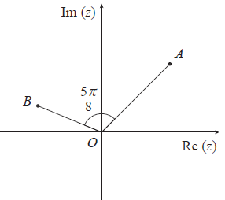
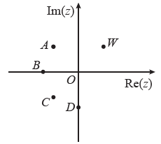
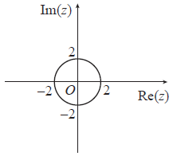
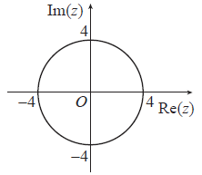
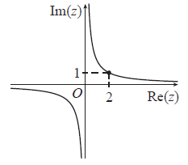
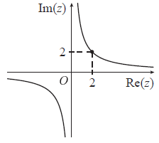
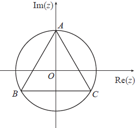
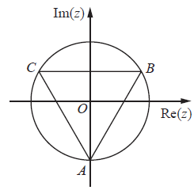

Aula 8 · Números ComplexosPreparação Exame Nacional · Mat A 635 · 2026
Números Complexos
Aula 8 (componente de Complexos) — Preparação para o Exame Nacional · Matemática A · 12.º ano · 2026
Estrutura desta aula. Os números complexos valem cerca de 24 pontos em cada exame (~12% da prova): 1 item de escolha múltipla de 12 pontos (argumento, módulo, afixo de transformação ou região no plano complexo) + 1 item de construção de 14 pontos, quase sempre "sem recorrer à calculadora" (raízes n-ésimas, equações, condições sobre módulo e argumento). O tema esteve presente em todos os 21 exames do arquivo, de 2019 a 2025, sem exceção.
Os 13 exercícios foram retirados diretamente dos enunciados oficiais das 1.ª e 2.ª fases e épocas especiais de 2022 a 2025. Dois itens (marcados a tracejado e a cor de âmbar) provêm da 1.ª fase de 2025: por isso, reserve a 2.ª fase de 2025 para a simulação completa da Aula 10.
A
Argumento e transformações no plano complexo
4 exercícios · escolha múltipla
A — Argumento de \(2iz\) EM (2023 · época especial · item 12)
B — Rotação de \(\tfrac{\pi}{3}\) do afixo de \(z=-2i\) EM (2024 · 2.ª fase · item 12)
C — Argumento de \(w\times z\) (figura) EM (2023 · 1.ª fase · item 10)
D — Afixo de \(i\,w^3\) (figura) EM2025 F1 (2025 · 1.ª fase · item 8)
B
Regiões e configurações geométricas
3 exercícios · escolha múltipla
E — Região definida por \(z\times\bar z=4\) EM (2022 · 2.ª fase · item 6)
F — Triângulo equilátero: quadrante de \(z_1^{\,2}\times z_2\) EM (2023 · 2.ª fase · item 11)
G — Raízes cúbicas num triângulo: determinar \(w\) EM (2024 · 1.ª fase · item 11)
C
Raízes n-ésimas e equações
3 exercícios · construção, sem calculadora
H — Restantes raízes cúbicas de \(w\) (2022 · 2.ª fase · item 7)
I — Soluções da equação \(z^2=w\) (2023 · 1.ª fase · item 11)
J — \(w\) é raiz sexta de \(z\): determinar \(iz\) (2024 · 2.ª fase · item 13)
D
Condições sobre módulo, argumento e afixos
3 exercícios · construção, sem calculadora
K — Menor \(n\) para que \(w\) seja imaginário puro (2023 · época especial · item 13)
L — \(z\times w\) com módulo \(5\sqrt2\) e afixo na bissetriz do 3.º Q (2024 · 1.ª fase · item 12)
M — Afixo de \(w\) equidistante de dois afixos 2025 F1 (2025 · 1.ª fase · item 9)
Números Complexos · Aula 8 · Preparação Mat A 12.º · 2026 · Página 1
Aula 8 · Conteúdos a reverPrograma de Matemática A · Ensino Secundário
Conteúdos a rever antes dos exercícios
Síntese alinhada com o Programa / Aprendizagens Essenciais de Matemática A (Números Complexos — 12.º ano). As fórmulas de De Moivre e das raízes n-ésimas constam do formulário do exame.
1. Formas algébrica e trigonométrica
Forma algébrica: \(z=a+bi\); módulo \(|z|=\sqrt{a^2+b^2}\); conjugado \(\bar z=a-bi\). Propriedade-chave: \(z\times\bar z=|z|^2\) (sempre real, não negativo).
Forma trigonométrica: \(z=\rho\,e^{i\theta}=\rho\,(\cos\theta+i\,\mathrm{sen}\,\theta)\), com \(\rho=|z|\) e \(\theta=\mathrm{Arg}(z)\).
Potências de \(i\): ciclo de 4 — \(i^n=i^{\,n\bmod 4}\). Ex.: \(i^{17}=i\), \(i^{18}=-1\), \(i^{19}=-i\), \(i^{23}=-i\). Aparece em quase todos os itens de construção.
Divisão na forma algébrica: multiplicar pelo conjugado do denominador. Ex.: \(\dfrac{4}{1-i}=\dfrac{4(1+i)}{2}=2+2i\).
2. Operações na forma trigonométrica (no formulário)
Multiplicar por \(i\) = rotação de \(\tfrac{\pi}{2}\) (sentido positivo); por \(i^k\) = rotação de \(k\tfrac{\pi}{2}\). Multiplicar por \(e^{i\alpha}\) = rotação de \(\alpha\). Conjugar = simetria em relação ao eixo real (\(\mathrm{Arg}(\bar z)=-\mathrm{Arg}(z)\)).
Fórmula de De Moivre: \(\left(\rho\,e^{i\theta}\right)^n=\rho^{\,n}e^{\,i\,n\theta}\).
Os \(n\) afixos são os vértices de um polígono regular inscrito na circunferência de raio \(\rho^{1/n}\) centrada na origem; argumentos consecutivos diferem de \(\tfrac{2\pi}{n}\). Atalho de exame: conhecida uma raiz, as restantes obtêm-se somando múltiplos de \(\tfrac{2\pi}{n}\) ao argumento.
Converter \(e^{i\theta}\) em \(a+bi\) com valores exatos quando \(\theta\) é múltiplo de \(\tfrac{\pi}{6}\), \(\tfrac{\pi}{4}\) ou \(\tfrac{\pi}{3}\).
4. Regiões e lugares geométricos no plano complexo
\(|z-z_0|\le r\): disco de centro no afixo de \(z_0\) e raio \(r\); \(|z-z_0|=r\): circunferência. Nota: \(z\times\bar z=r^2 \Leftrightarrow |z|=r\).
\(\mathrm{Re}(z)\ge a\) ou \(\mathrm{Im}(z)\le b\): semiplanos; \(|z-z_1|=|z-z_2|\): mediatriz do segmento que une os afixos.
\(\mathrm{Arg}(z)=\theta\): semirreta com origem em \(O\). Bissetriz do 1.º quadrante: \(\theta=\tfrac{\pi}{4}\) (ou \(\mathrm{Im}=\mathrm{Re}>0\)); do 3.º quadrante: \(\theta=\tfrac{5\pi}{4}\) (ou \(\mathrm{Im}=\mathrm{Re}<0\)).
Erros mais frequentes. (1) Trocar o sentido da rotação: multiplicar por \(i\) roda \(+\tfrac{\pi}{2}\), dividir por \(i\) (ou multiplicar por \(-i\)) roda \(-\tfrac{\pi}{2}\). (2) Esquecer reduzir potências de \(i\) módulo 4 antes de tudo o resto. (3) Nas raízes n-ésimas, esquecer o \(2k\pi\) e apresentar uma única raiz. (4) Confundir \(z\times\bar z=|z|^2\) (real) com \(z^2\). (5) Apresentar a resposta na forma errada — verifique sempre se o enunciado pede forma trigonométrica ou forma \(a+bi\): a classificação penaliza a forma errada.
Números Complexos · Aula 8 · Preparação Mat A 12.º · 2026 · Página 2
Aula 8 · SECÇÃO A · Argumento e transformaçõesExames 2023–2025
A
Argumento e transformações no plano complexo — 4 exercícios
Item de escolha múltipla presente em todos os exames (12 pontos)
Exercício A — Argumento de \(2iz\) EM
Exame Final Nacional · Mat A 635 · 2023 · época especial · item 12 · 12 pts
Seja \(z\) um número complexo de argumento \(\dfrac{\pi}{7}\).
Qual dos seguintes valores é um argumento de \(2iz\) ?
Dica de resolução: multiplicar por \(2\) não altera o argumento; multiplicar por \(i\) soma \(\tfrac{\pi}{2}\):
\[\mathrm{Arg}(2iz)=\frac{\pi}{2}+\frac{\pi}{7}=\frac{7\pi+2\pi}{14}=\frac{9\pi}{14}.\]
Resposta: (B).
Exercício B — Rotação de \(\tfrac{\pi}{3}\) EMessencial
Exame Final Nacional · Mat A 635 · 2024 · 2.ª fase · item 12 · 12 pts
Porque é importante. Traduz a rotação para a linguagem dos complexos: rodar o afixo de \(z\) de \(\alpha\) em torno da origem é multiplicar por \(e^{i\alpha}\). É a versão "inversa" do exercício A.
Considere o ponto \(A\), afixo no plano complexo do número \(z=-2i\).
Qual dos seguintes números complexos tem como afixo o transformado do ponto \(A\) por uma rotação de centro na origem e de ângulo orientado de amplitude \(\dfrac{\pi}{3}\) radianos?
Dica de resolução: \(z=-2i=2e^{i\left(-\frac{\pi}{2}\right)}\). Rodar de \(\tfrac{\pi}{3}\) é multiplicar por \(e^{i\frac{\pi}{3}}\):
\[2e^{i\left(-\frac{\pi}{2}+\frac{\pi}{3}\right)}=2e^{-i\frac{\pi}{6}}=2\left(\cos\tfrac{\pi}{6}-i\,\mathrm{sen}\tfrac{\pi}{6}\right)=\sqrt3-i.\]
Resposta: (A).
Exercício C — Argumento de \(w\times z\) (figura) EM
Exame Final Nacional · Mat A 635 · 2023 · 1.ª fase · item 10 · 12 pts
Na Figura, estão representados, no plano complexo, os pontos \(A\) e \(B\). O ponto \(O\) é a origem do referencial.

Figura 4 (2023 · 1.ª fase)
O ponto \(A\) é o afixo de um número complexo \(z\) tal que \(\mathrm{Im}(z)=\mathrm{Re}(z)\) e \(\mathrm{Re}(z)>0\).
O ponto \(B\) (no 2.º quadrante) é o afixo de um número complexo \(w\) tal que o ângulo convexo \(AOB\) tem amplitude \(\dfrac{5\pi}{8}\) radianos.
Qual dos valores seguintes é um argumento de \(w\times z\) ?
Dica de resolução: de \(\mathrm{Im}(z)=\mathrm{Re}(z)>0\) vem \(\mathrm{Arg}(z)=\tfrac{\pi}{4}\). Como \(B\) está no 2.º quadrante, \(\mathrm{Arg}(w)=\tfrac{\pi}{4}+\tfrac{5\pi}{8}=\tfrac{7\pi}{8}\). Então
\[\mathrm{Arg}(w\times z)=\frac{7\pi}{8}+\frac{\pi}{4}=\frac{9\pi}{8}.\]
Resposta: (C).
Números Complexos · Aula 8 · Preparação Mat A 12.º · 2026 · Página 3
Aula 8 · SECÇÃO A · Argumento e transformaçõesExames 2023–2025
Exercício D — Afixo de \(i\,w^3\) (figura) EM
Exame Final Nacional · Mat A 635 · 2025 · 1.ª fase · item 8 · 12 pts
Item de 2025 · 1.ª fase — reserve a 2.ª fase de 2025 para a simulação (Aula 10)
Na Figura, estão representados, no plano complexo, os afixos de cinco números complexos. Sabe-se que:
os pontos \(A\) e \(C\) pertencem, respetivamente, ao 2.º e ao 3.º quadrantes;
o ponto \(B\) pertence ao semieixo real negativo;
o ponto \(D\) pertence ao semieixo imaginário negativo;
o ponto \(W\) pertence ao 1.º quadrante e é o afixo de um número complexo \(w\) tal que \(\mathrm{Im}(w)=\mathrm{Re}(w)\).

Figura 2 (2025 · 1.ª fase)
Qual dos pontos seguintes pode ser o afixo do número complexo \(i\,w^3\) ?
(A) Ponto \(A\)(B) Ponto \(B\)(C) Ponto \(C\)(D) Ponto \(D\)
Dica de resolução: \(W\) no 1.º quadrante com \(\mathrm{Im}=\mathrm{Re}\) dá \(\mathrm{Arg}(w)=\tfrac{\pi}{4}\). Por De Moivre, \(\mathrm{Arg}(w^3)=\tfrac{3\pi}{4}\); multiplicar por \(i\) soma \(\tfrac{\pi}{2}\):
\[\mathrm{Arg}\!\left(i\,w^3\right)=\frac{3\pi}{4}+\frac{\pi}{2}=\frac{5\pi}{4}\;\Rightarrow\;\text{3.º quadrante}.\]
Resposta: (C) Ponto C.(Erro típico: ler \(i\,w^3\) como \((iw)^3\), que daria argumento \(\tfrac{9\pi}{4}\equiv\tfrac{\pi}{4}\) — 1.º quadrante.)
B
Regiões e configurações geométricas — 3 exercícios
Identificar lugares geométricos e ler configurações de afixos (12 pontos)
Exercício E — Região definida por \(z\times\bar z=4\) EM
Exame Final Nacional · Mat A 635 · 2022 · 2.ª fase · item 6 · 12 pts
Considere, em \(\mathbb C\), conjunto dos números complexos, a condição \(z\times\bar z=4\).
Em qual das opções seguintes está representado, no plano complexo, o conjunto de pontos definido por esta condição?
(A)

(B)

(C)

(D)

Dica de resolução: \(z\times\bar z=|z|^2\), logo a condição equivale a \(|z|^2=4 \Leftrightarrow |z|=2\): circunferência centrada na origem e raio \(2\). Resposta: (A).(As hipérboles são o "isco" para quem lê \(\mathrm{Re}(z)\times\mathrm{Im}(z)=4\).)
Números Complexos · Aula 8 · Preparação Mat A 12.º · 2026 · Página 4
Aula 8 · SECÇÃO B · Regiões e configuraçõesExames 2022–2024
Exercício F — Triângulo equilátero: quadrante de \(z_1^{\,2}\times z_2\) EM
Exame Final Nacional · Mat A 635 · 2023 · 2.ª fase · item 11 · 12 pts
Na Figura, está representado, no plano complexo, um triângulo equilátero \([ABC]\), inscrito numa circunferência de centro na origem do referencial, \(O\).
O ponto \(A\) pertence ao semieixo imaginário positivo. Os pontos \(A\) e \(B\) são os afixos dos números complexos \(z_1\) e \(z_2\), respetivamente (\(B\) no 3.º quadrante).

Figura 5 (2023 · 2.ª fase)
A qual dos quadrantes do plano complexo pertence o afixo do número complexo \(z_1^{\,2}\times z_2\) ?
(A) Ao primeiro.(B) Ao segundo.(C) Ao terceiro.(D) Ao quarto.
Dica de resolução: \(\mathrm{Arg}(z_1)=\tfrac{\pi}{2}\); os vértices do triângulo equilátero distam \(\tfrac{2\pi}{3}\), logo \(\mathrm{Arg}(z_2)=\tfrac{\pi}{2}+\tfrac{2\pi}{3}=\tfrac{7\pi}{6}\). Então
\[\mathrm{Arg}\!\left(z_1^{\,2}\times z_2\right)=2\cdot\frac{\pi}{2}+\frac{7\pi}{6}=\pi+\frac{7\pi}{6}=\frac{13\pi}{6}\equiv\frac{13\pi}{6}-2\pi=\frac{\pi}{6},\]
que pertence ao 1.º quadrante. Resposta: (A).
Exercício G — Raízes cúbicas num triângulo: determinar \(w\) EMessencial
Exame Final Nacional · Mat A 635 · 2024 · 1.ª fase · item 11 · 12 pts
Porque é importante. Faz o caminho inverso das raízes n-ésimas: da configuração geométrica (polígono regular) recupera-se o número original por De Moivre. Liga a Secção B à Secção C.
Na Figura, está representado, no plano complexo, o triângulo \([ABC]\), cujos vértices pertencem à circunferência de raio \(2\) centrada na origem do referencial, sendo o ponto \(A\) pertencente ao semieixo imaginário negativo.
Os pontos \(A\), \(B\) e \(C\) são os afixos das raízes cúbicas de um certo número complexo, \(w\).

Figura 5 (2024 · 1.ª fase)
Em qual das seguintes opções se apresenta \(w\), escrito na forma trigonométrica?
Dica de resolução: as raízes têm módulo \(2\), logo \(|w|=2^3=8\) (elimina já (A) e (B)). A raiz com afixo em \(A\) é \(2e^{\,i\frac{3\pi}{2}}\); por De Moivre,
\[w=\left(2e^{\,i\frac{3\pi}{2}}\right)^{3}=8\,e^{\,i\frac{9\pi}{2}}=8\,e^{\,i\left(\frac{9\pi}{2}-4\pi\right)}=8\,e^{\,i\frac{\pi}{2}}.\]
Resposta: (C).(Erro típico: esquecer reduzir \(\tfrac{9\pi}{2}\) módulo \(2\pi\) e escolher (D).)
Números Complexos · Aula 8 · Preparação Mat A 12.º · 2026 · Página 5
Aula 8 · SECÇÃO C · Raízes n-ésimas e equaçõesExames 2022–2024 · sem calculadora
C
Raízes n-ésimas e equações — 3 exercícios
Item de construção "sem recorrer à calculadora" (14 pontos)
Exercício H — Restantes raízes cúbicas de \(w\) essencial
Exame Final Nacional · Mat A 635 · 2022 · 2.ª fase · item 7 · 14 pts
Porque é importante. É o protótipo do item de raízes: simplificar \(z\) (divisão + potência de \(i\)), passar à forma trigonométrica e usar o facto de as raízes cúbicas diferirem de \(\tfrac{2\pi}{3}\) no argumento.
Resolva este item sem recorrer à calculadora.
Considere, em \(\mathbb C\), conjunto dos números complexos, o número complexo \(z=\dfrac{4}{1-i}+4i^{18}\).
O número complexo \(z\) é uma das raízes cúbicas de um número complexo \(w\).
Determine as restantes raízes cúbicas de \(w\) e apresente-as na forma trigonométrica.
Resolução:
Dica de resolução: \(\dfrac{4}{1-i}=\dfrac{4(1+i)}{2}=2+2i\) e \(i^{18}=i^{2}=-1\), logo \(z=2+2i-4=-2+2i=2\sqrt2\,e^{\,i\frac{3\pi}{4}}\). As três raízes cúbicas de \(w\) têm o mesmo módulo e argumentos que diferem de \(\tfrac{2\pi}{3}\):
\[2\sqrt2\,e^{\,i\left(\frac{3\pi}{4}+\frac{2\pi}{3}\right)}=2\sqrt2\,e^{\,i\frac{17\pi}{12}}
\qquad\text{e}\qquad
2\sqrt2\,e^{\,i\left(\frac{3\pi}{4}-\frac{2\pi}{3}\right)}=2\sqrt2\,e^{\,i\frac{\pi}{12}}.\]
Restantes raízes: \(2\sqrt2\,e^{\,i\frac{\pi}{12}}\) e \(2\sqrt2\,e^{\,i\frac{17\pi}{12}}\).
Exercício I — Soluções da equação \(z^2=w\)
Exame Final Nacional · Mat A 635 · 2023 · 1.ª fase · item 11 · 14 pts
Resolva este item sem recorrer à calculadora.
Considere, em \(\mathbb C\), conjunto dos números complexos, o número \(w=\dfrac{e^{\,i\frac{5\pi}{6}}-i^{17}}{i}\).
Determine, em \(\mathbb C\), as soluções da equação \(z^2=w\).
Apresente os valores pedidos na forma \(a+bi\), com \(a,b\in\mathbb R\).
Resolução:
Dica de resolução: \(i^{17}=i\) e \(e^{\,i\frac{5\pi}{6}}=-\tfrac{\sqrt3}{2}+\tfrac12 i\), logo o numerador é \(-\tfrac{\sqrt3}{2}-\tfrac12 i=e^{\,i\frac{7\pi}{6}}\) (módulo 1). Dividir por \(i\) subtrai \(\tfrac{\pi}{2}\): \(w=e^{\,i\left(\frac{7\pi}{6}-\frac{\pi}{2}\right)}=e^{\,i\frac{2\pi}{3}}\). As raízes quadradas têm módulo \(1\) e argumentos \(\tfrac{\pi}{3}\) e \(\tfrac{\pi}{3}+\pi\):
\[z=e^{\,i\frac{\pi}{3}}=\frac12+\frac{\sqrt3}{2}i
\qquad\text{ou}\qquad
z=e^{\,i\frac{4\pi}{3}}=-\frac12-\frac{\sqrt3}{2}i.\]
Soluções: \(\tfrac12+\tfrac{\sqrt3}{2}i\) e \(-\tfrac12-\tfrac{\sqrt3}{2}i\).
Exercício J — \(w\) é raiz sexta de \(z\): determinar \(iz\)
Exame Final Nacional · Mat A 635 · 2024 · 2.ª fase · item 13 · 14 pts
Resolva este item sem recorrer à calculadora.
Considere, em \(\mathbb C\), conjunto dos números complexos, o número \(w=\dfrac{-1-\sqrt3\,i}{e^{\,i\left(-\frac{3\pi}{4}\right)}}\).
O número complexo \(w\) é uma das raízes sextas de um certo número complexo \(z\).
Determine \(iz\).
Resolução:
Dica de resolução: \(-1-\sqrt3\,i=2e^{\,i\left(-\frac{2\pi}{3}\right)}\). Dividir por \(e^{\,i\left(-\frac{3\pi}{4}\right)}\) subtrai esse argumento:
\[w=2\,e^{\,i\left(-\frac{2\pi}{3}+\frac{3\pi}{4}\right)}=2\,e^{\,i\frac{\pi}{12}}
\;\Rightarrow\;
z=w^{6}=2^{6}e^{\,i\frac{6\pi}{12}}=64\,e^{\,i\frac{\pi}{2}}=64\,i.\]
Logo \(iz=i\times 64i=\) \(-64\).
Números Complexos · Aula 8 · Preparação Mat A 12.º · 2026 · Página 6
Aula 8 · SECÇÃO D · Condições sobre módulo, argumento e afixosExames 2023–2025 · sem calculadora
D
Condições sobre módulo, argumento e afixos — 3 exercícios
Item de construção: traduzir condições geométricas em equações (14 pontos)
Exercício K — Menor \(n\) para que \(w\) seja imaginário puro
Exame Final Nacional · Mat A 635 · 2023 · época especial · item 13 · 14 pts
Considere, em \(\mathbb C\), conjunto dos números complexos, os números
\[z_1=-5i \qquad\text{e}\qquad z_2=-1-\sqrt3\,i\,.\]
Determine o menor número natural \(n\) para o qual o número complexo \(w=\dfrac{z_1+i^{23}}{z_2^{\,n}}\) é um imaginário puro.
Resolução:
Dica de resolução: \(i^{23}=-i\), logo \(z_1+i^{23}=-6i=6\,e^{\,i\frac{3\pi}{2}}\). E \(z_2=2\,e^{\,i\frac{4\pi}{3}}\), pelo que
\[w=\frac{6}{2^{\,n}}\;e^{\,i\left(\frac{3\pi}{2}-n\frac{4\pi}{3}\right)}.\]
\(w\) é imaginário puro quando o argumento é \(\tfrac{\pi}{2}+k\pi\): \(\;\tfrac{3\pi}{2}-\tfrac{4n\pi}{3}=\tfrac{\pi}{2}+k\pi \Leftrightarrow \tfrac{4n}{3}=1-k\), ou seja, \(\tfrac{4n}{3}\) inteiro \(\Leftrightarrow n\) múltiplo de \(3\). O menor natural é \(n=3\) (verificação: \(\tfrac{3\pi}{2}-4\pi=-\tfrac{5\pi}{2}\equiv-\tfrac{\pi}{2}\) ✓).
Exercício L — \(z\times w\) com módulo \(5\sqrt2\) e afixo na bissetriz do 3.º quadrante essencial
Exame Final Nacional · Mat A 635 · 2024 · 1.ª fase · item 12 · 14 pts
Porque é importante. Obriga a traduzir duas condições (módulo + lugar geométrico do afixo) num único complexo \(z\times w\), e a terminar com uma divisão na forma algébrica. É o item de construção mais completo dos últimos anos.
Resolva este item sem recorrer à calculadora.
Em \(\mathbb C\), conjunto dos números complexos, considere o número complexo \(z=\dfrac{4}{1+i}-\dfrac{2}{i^{7}}\).
Determine o número complexo \(w\) tal que o número complexo \(z\times w\) tenha módulo \(5\sqrt2\) e afixo pertencente à bissetriz do terceiro quadrante.
Apresente \(w\) na forma \(a+bi\), com \(a,b\in\mathbb R\).
Resolução:
Dica de resolução: \(\dfrac{4}{1+i}=2-2i\) e \(i^{7}=-i\), donde \(\dfrac{2}{i^{7}}=\dfrac{2}{-i}=2i\) e \(z=2-2i-2i=2-4i\). As condições dão
\[z\times w=5\sqrt2\,e^{\,i\frac{5\pi}{4}}=5\sqrt2\left(-\tfrac{\sqrt2}{2}-\tfrac{\sqrt2}{2}i\right)=-5-5i.\]
Logo \(w=\dfrac{-5-5i}{2-4i}=\dfrac{(-5-5i)(2+4i)}{20}=\dfrac{10-30i}{20}=\) \(\dfrac12-\dfrac32 i\).
Exercício M — Afixo de \(w\) equidistante de dois afixos essencial
Exame Final Nacional · Mat A 635 · 2025 · 1.ª fase · item 9 · 14 pts
Item de 2025 · 1.ª fase — reserve a 2.ª fase de 2025 para a simulação (Aula 10)
Resolva este item sem recorrer à calculadora.
Considere, em \(\mathbb C\), conjunto dos números complexos, os números \(z_1=2i^{19}\) e \(z_2=\dfrac{-3+i}{1+i}\).
Seja \(w=-\sqrt2\,k\,e^{\,i\frac{3\pi}{4}}\), com \(k\in\mathbb R\).
Determine o valor de \(k\) para o qual o afixo de \(w\) é equidistante do afixo de \(z_1\) e do afixo de \(z_2\).
Resolução:
Dica de resolução: \(i^{19}=-i\Rightarrow z_1=-2i\) (afixo \((0,-2)\)); \(z_2=\dfrac{(-3+i)(1-i)}{2}=\dfrac{-2+4i}{2}=-1+2i\) (afixo \((-1,2)\)). Como \(e^{\,i\frac{3\pi}{4}}=-\tfrac{\sqrt2}{2}+\tfrac{\sqrt2}{2}i\),
\[w=-\sqrt2\,k\left(-\tfrac{\sqrt2}{2}+\tfrac{\sqrt2}{2}i\right)=k-ki \;\Rightarrow\; \text{afixo } (k,-k).\]
Equidistância: \(k^2+(-k+2)^2=(k+1)^2+(-k-2)^2 \Leftrightarrow 2k^2-4k+4=2k^2+6k+5 \Leftrightarrow -10k=1\).
\(k=-\dfrac{1}{10}\).
Números Complexos · Aula 8 · Preparação Mat A 12.º · 2026 · Página 7
Traduzir em coordenadas \((\mathrm{Re},\mathrm{Im})\) e equacionar
L, M
Antes de tudo
Reduzir potências de \(i\) (mód. 4) e simplificar divisões pelo conjugado
H–M
Itens de 2025 · 1.ª fase usados nesta aula: D e M. Se preferir manter a 1.ª fase de 2025 intacta para simulação, substitua por: D → 2022 · 1.ª fase · item 10 (afixo de \(-i\,w^2\), figura análoga) ou 2025 · ép. especial · item 12.1 (argumento de \(i^{23}w^2\times\dots\)); M → 2021 · 2.ª fase · item 8 (reta no plano complexo: complexo de menor módulo) ou 2024 · ép. especial · item 13 (\(z=2e^{i\theta}\): determinar \(\theta\)).
Restante arquivo (não usado nesta aula): 2019 (F1: 6, 10 · F2: 7, 8 · esp.: 5, 10), 2020 (F1: 4.1 — clássico \(z^2=\bar z\), perímetro do polígono — e 4.2 · F2: 8.1, 8.2 · esp.: 7.1, 7.2), 2021 (F1: 8, 9 · F2: 7, 8 · esp.: 8, 9), 2022 (F1: 10, 11 · esp.: 8, 9), 2023 F2: 12, 2024 esp.: 12, 2025 esp.: 12.1, 12.2 — bom material para fichas extra. A 2.ª fase de 2025 (itens 7 e 8) fica integralmente reservada para a simulação da Aula 10.
Números Complexos · Aula 8 · Preparação Mat A 12.º · 2026 · Página 8 · Compilado dos enunciados oficiais IAVE